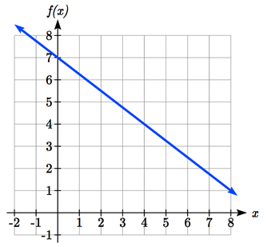

Section 2.1 Linear Functions
Objectives: Important Topics of this Section
-
-
Definition of a linear function
-
Structure of a linear function
-
Increasing and Decreasing functions
-
Finding the vertical intercept
\((0, b)\)
-
Finding the slope/rate of change,
\(m\)
-
Interpreting linear functions
As you hop into a taxicab in Las Vegas, the meter will immediately read $3.50; this is the "drop" charge made when the taximeter is activated. After that initial fee, the taximeter will add $2.76 for each mile the taxi drives . In this scenario, the total taxi fare depends upon the number of miles ridden in the taxi, and we can ask whether it is possible to model this type of scenario with a function. Using descriptive variables, we choose
\(m\) for miles and
\(C\) for Cost in dollars as a function of miles:
\(f(m)=C\text{.}\) We know for certain that
\(f(0)=3.50\text{,}\) since the $3.50 drop charge is assessed regardless of how many miles are driven. Since $2.67 is added for each mile driven, then
\(f(1)=3.50+2.67=6.17\text{.}\)
If we then drove a second mile, another $2.67 would be added to the cost:
\(f(2)=3.50+2.67+2.67=3.50+2.67(2)=8.84\text{.}\)
If we drove a third mile, another $2.67 would be added to the cost:
\(f(3)=3.50+2.67+2.67+2.67=3.50+2.67(3)=11.51\text{.}\)
From this we might observe the pattern, and conclude that if
\(m\) miles are driven,
\(f(m)=3.50+2.67m\) because we start with a $3.50 drop fee and then for each mile increase we add $2.67.
It is good to verify that the units make sense in this equation. The $3.50 drop charge is measured in dollars; the $2.67 charge is measured in dollars per mile.
\(f(m)=3.50 \text{ dollars}+(2.67 \dfrac{\text{dollars}}{\text{mile}})(m \text{ miles})\) When dollars per mile are multiplied by a number of miles, the result is a number of dollars, matching the units on the 3.50, and matching the desired units for the cost function.
Notice this equation
\(f(m)=3.50+2.67m\) consisted of two quantities. The first is the fixed $3.50 charge which does not change based on the value of the input. The second is the $2.67 dollars per mile value, which is a rate of change. In the equation, this rate of change is multiplied by the input value.
Looking at this same problem in table format we can also see the cost changes by $2.67 for every 1 mile increase.
| \(m\) |
0 |
1 |
2 |
3 |
| \(C\) |
3.50 |
6.17 |
8.84 |
11.51 |
It is important here to note that in this equation, the rate of change is constant; over any interval, the rate of change is the same.
Definition 2.1.1. Constant Rate of Change.
If \(x\) and \(y\) are the values of two quantities related by a constant rate of change, then over any interval from \(x_{1}\) to \(x_{2}\text{,}\) where \(y\) changes from \(y_{1}\) to \(y_{2}\text{,}\) then the ratio of the change in \(y\) over the change in \(x\) will always have the same value, regardless of the interval. That is,
\begin{equation*}
\dfrac{\text{Change in }y}{\text{Change in }x}=\dfrac{\Delta y}{\Delta x}=\dfrac{y_2-y_1}{x_2-x_1}
\end{equation*}
will always return the same value regardless of the interval of \(x\) values being observed. This ratio \(\frac{\Delta y}{\Delta x}\) is how we calculate the constant rate of change of \(y\) with respect to \(x\text{,}\) and is commonly represented by the letter \(m\text{.}\)
Note in function notation, \(y_{1}=f(x_{1})\) and \(y_{2}=f(x_{2})\text{,}\) so we could equivalently write
\begin{equation*}
m=\dfrac{f(x_2 )-f(x_1 )}{x_2-x_1}.
\end{equation*}
Graphing this equation,
\(f(m)=3.50+2.67m\) we see the shape is a line, which is how these functions get their name: linear functions.
When the number of miles is zero the cost is $3.50, giving the point
\((0, 3.50)\) on the graph. This is the vertical intercept, also known as the initial value. The graph is increasing in a straight line from left to right because for each mile the cost goes up by $2.67; this rate remains consistent. In this example, you have seen the taxicab cost modeled in words, an equation, a table and in graphical form. Whenever possible, ensure that you can link these four representations together to continually build your skills. It is important to note that you will not always be able to find all 4 representations for a problem and so being able to work with all 4 forms is very important.
Definition 2.1.2. Linear Function.
A linear function is a function whose quantities vary with a constant rate of change, and whose graph produces a line. Linear functions can always be written in the form
\(f(x)=b+mx\) or
\(f(x)=mx+b\) (they’re equivalent) where
\(b\) is the initial or starting value of the function (when input,
\(x = 0\)), and
\(m\) is the constant rate of change of the function
Many people like to write linear functions in the form
\(f(x)=b+mx\) because it corresponds to the way we tend to speak: "The output starts at
\(b\) and increases at a rate of
\(m\text{.}\)"
For this reason alone we will use the
\(f(x)=b+mx\) form for many of the examples, but remember they are equivalent and can be written correctly both ways.
Definition 2.1.3. Increasing/Decreasing Slope.
Let
\(m\) be the constant rate of change of a linear function (also called slope). The slope determines if the function is an increasing function or a decreasing function.
\(f(x)=b+mx\) is an increasing function if
\(m>0\text{.}\) \(f(x)=b+mx\) is a decreasing function if
\(m<0\text{.}\) If
\(m=0\text{,}\) the rate of change zero, and the function
\(f(x)=b+0x=b\) is just a horizontal line passing through the point
\((0, b)\text{,}\) neither increasing nor decreasing.
Example 2.1.4.
Marcus currently owns 200 songs in his iTunes collection. Every month, he adds 15 new songs. Write a formula for the number of songs,
\(N\text{,}\) in his iTunes collection as a function of the number of months,
\(m\text{.}\) How many songs will he own in a year?
Solution.
Let
\(f\) be the function such that
\(f(m)=N\text{.}\) The initial value for this function is 200, since he currently owns 200 songs, so
\(f(0)=200\text{.}\) The number of songs increases by 15 songs per month, so the rate of change is 15 songs per month. With this information, we can write the formula:
\(f(m)=200+15m\text{.}\) \(f(m)\) is an increasing linear function. With this formula we can predict how many songs he will have in 1 year (12 months):
\(f(12)=200+15(12)=200+180=380\text{.}\) So, Marcus will have 380 songs in 12 months.
Checkpoint 2.1.5.
If you earn $30,000 per year and you spend $29,000 per year, write an equation for the amount of money you save after
\(y\) years, assuming you start with nothing in savings.
Example 2.1.6.
The population of a city increased from 23,400 to 27,800 between 2002 and 2006. Find the constant rate of change of the population during this time span.
Solution.
The constant rate of change will relate the change in population to the change in time. The population increased by
\(27800-23400=4400\) people over the 4 year time interval. To find the constant rate of change, the number of people per year the population changed by:
\(\dfrac{4400 \text{ people}}{4\text{ years}}=1100 \dfrac{\text{people}}{\text{year}}= 1100\) people per year.
Notice that we knew the population was increasing, so we would expect our value for the slope to be positive. This is a quick way to check to see if your value is reasonable.
Example 2.1.7.
The pressure,
\(P\text{,}\) in pounds per square inch (PSI) on a diver depends upon their depth below the water surface,
\(d\text{,}\) in feet, following the equation
\(P=14.696+0.434d\text{.}\) Interpret the components of this function.
Solution.
The rate of change, or slope, 0.434 would have units "output" per "input" = "pressure" per "depth" ="PSI" per "ft" . This tells us the pressure on the diver increases by 0.434 PSI for each foot their depth increases.
The initial value, 14.696, will have the same units as the output, so this tells us that at a depth of 0 feet, the pressure on the diver will be 14.696 PSI.
Example 2.1.8.
If
\(f(x)\) is a linear function, where
\(f(3)=-2\) and
\(f(8)=1\text{,}\) find the constant rate of change.
Solution.
\(f(3)=-2\) tells us that the input 3 corresponds with the output -2, and
\(f(8)=1\) tells us that the input 8 corresponds with the output 1. To find the constant rate of change, we divide the change in output by the change in input:
\begin{equation*}
m=\dfrac{f(8)-f(3)}{8-3}=\dfrac{1-(-2)}{8-3}=\dfrac{3}{5}.
\end{equation*}
If desired we could also write this as \(m = 0.6\text{.}\)
Checkpoint 2.1.9.
Given that the graph of a linear function passes through the two points
\((2, 3)\) and
\((0, 4)\text{,}\) find the constant rate of change. Is this function increasing or decreasing?
We can now find the constant rate of change given two input-output pairs, and can write an equation for a linear function once we have the rate of change and initial value. If we have two input-output pairs and they do not include the initial value of the function, then we will have to solve for it.
Example 2.1.10.
Write an equation for the linear function graphed below.

Solution.
Looking at the graph, we might notice that it passes through the points
\((0, 7)\) and
\((4, 4)\text{.}\) From the first value, we know the initial value of the function is
\(b = 7\text{,}\) so in this case we will only need to calculate the rate of change:
\(m=\dfrac{4-7}{4-0}=\dfrac{-3}{4}\)
This allows us to write the equation:
\(f(x)=7-\dfrac{3}{4}x\)
Example 2.1.11.
If
\(f(x)\) is a linear function,
\(f(3)=-2\text{,}\) and
\(f(8)=1\text{,}\) find an equation for the function.
Solution.
In a previous example, we computed the rate of change to be
\(m=\dfrac{3}{5}\text{.}\) In this case, we do not know the initial value
\(f(0)\text{,}\) so we will have to solve for it. Using the rate of change, we know the equation will have the form
\(f(x)=b+\dfrac{3}{5}x\text{.}\) Since we know the value of the function when
\(x = 3\text{,}\) we can evaluate the function at 3.
\(f(3)=b+\dfrac{3}{5}(3)\text{.}\) Since we know that
\(f(3)=-2\text{,}\) we can substitute on the left side:
\(-2=b+\dfrac{3}{5}(3)\text{.}\) This leaves us with an equation we can solve for the initial value
\(b=-2-\dfrac{9}{5}=\dfrac{-19}{5}\text{.}\)
Combining this with the value for the rate of change, we can now write a formula for this function:
\(f(x)=\dfrac{-19}{5}+\dfrac{3}{5}x\text{.}\)
Example 2.1.12.
Working as an insurance salesperson, Ilya earns a base salary and a commission on each new policy, so Ilya’s weekly income, I, depends on the number of new policies, n, he sells during the week. Last week he sold 3 new policies, and earned $760 for the week. The week before, he sold 5 new policies, and earned $920. Find an equation for f(n)=I, and interpret the meaning of the components of the equation.
Solution.
The given information gives us two input-output pairs:
\((3,760)\) and
\((5,920)\text{.}\) We start by finding the rate of change.
\(m=\dfrac{920-760}{5-3}=\dfrac{160}{2}=80\text{.}\)
Keeping track of units can help us interpret this quantity. Income increased by $160 when the number of policies increased by 2, so the rate of change is $80 per policy; Ilya earns a commission of $80 for each policy sold during the week.
We can then solve for the initial value: Starting by substituting in the constant rate of change, we know;
\(f(n)=b+80n\text{.}\) When
\(n = 3\text{,}\) \(f(3)=760\text{,}\) giving
\(760=b+80(3)\text{.}\) This allows us to solve for
\(b\text{:}\) \(b=760-80(3)=520\text{.}\)
This value is the starting value for the function. This is Ilya’s income when n = 0, which means no new policies are sold. We can interpret this as Ilya’s base salary for the week, which does not depend upon the number of policies sold.
Writing the final equation:
\(f(n)=520+80n\text{.}\) Our final interpretation is: Ilya’s base salary is $520 per week and he earns an additional $80 commission for each policy sold each week.
Checkpoint 2.1.13.
Looking at the previous example: Determine the independent and dependent variables. Is this function one-to-one?
Checkpoint 2.1.14.
The balance in your college payment account,
\(C\text{,}\) is a function of the number of semesters,
\(s\text{,}\) you attend. Interpret the function
\(f(s)=C, f(s) = 24000-8000s\) in words. How many semesters of college can you pay for until this account is empty?
Example 2.1.15.
Given the table below write a linear equation that represents the table values
|
\(w\text{,}\) number of weeks |
0 |
2 |
4 |
6 |
|
\(P=g(w)\text{,}\) number of rats |
1000 |
1080 |
1160 |
1240 |
Solution.
We can see from the table that the initial value of rats is 1000 so in the linear format
\(g(w)=b+mw, b = 1000\text{.}\)
Rather than solving for
\(m\text{,}\) we can notice from the table that the population goes up by 80 for every 2 weeks that pass. This rate is consistent from week 0, to week 2, 4, and 6. The rate of change is 80 rats per 2 weeks. This can be simplified to 40 rats per week and we can write
\(f(w)=b+mw\) as
\(f(w)=1000+40w\text{.}\)
If you didn’t notice this from the table you could still solve for the slope using any two points from the table. For example, using
\((2, 1080)\) and
\((6, 1240)\text{,}\) \(m=\dfrac{1240-1080}{6-2}=\dfrac{160}{4}=40\) rats per week.
Checkpoint 2.1.16.
Answers to Checkpoint Exercises
Answer.
-
\(f(y)=30,000y-29,000y=1000y\) $1000 is saved each year.
-
\(m=\dfrac{4-3}{0-2}=\dfrac{1}{-2}=\dfrac{-1}{2}\) ; Decreasing because
\(m < 0\text{.}\)
-
\(n\) (number of policies sold) is the independent variable and
\(I\) (weekly income as a function of policies sold) is the dependent variable. This function is one-to-one.
-
Your College account starts with $24,000 in it and you withdraw $8,000 each semester (or your account contains $24,000 and decreases by $8000 each semester). Solving
\(f(s) = 0\) gives
\(s = 3\text{.}\) You can pay for 3 semesters before the money in this account is gone.